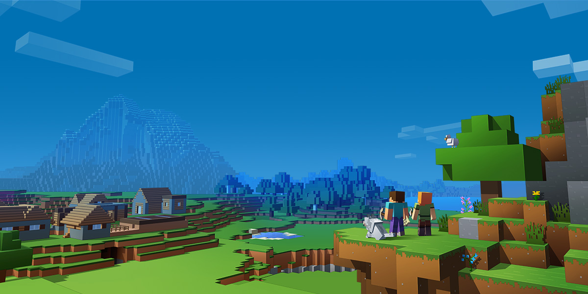

Explore your own unique world, survive the night, and create anything you can imagine!
Minecraft is a sandbox video game originally created by Markus "Notch" Persson. It is maintained by Mojang Studios, a part of Xbox Game Studios, which in turn is part of Microsoft.
From its creation, Minecraft was developed almost exclusively by Notch until Jens "Jeb" Bergensten started working with him, and has since become head of its development. It features music by Daniel "C418" Rosenfeld and paintings by Kristoffer Zetterstrand. Initially released as what is now known as Minecraft Classic on May 17, 2009, the game was fully released on November 18, 2011. Since its release, Minecraft has expanded to mobile devices and consoles. On November 6, 2014, Minecraft and all of Mojang Studios' assets were acquired by Microsoft for US$2.5 billion.Notch has since left Mojang, and is no longer working on Minecraft.
Minecraft focuses on allowing the player to explore, interact with, and modify a dynamically-generated map made of one-cubic-meter-sized blocks. In addition to blocks, the environment features plants, mobs, and items. Some activities in the game include mining for ore, fighting hostile mobs, and crafting new blocks and tools by gathering various resources found in the game. The game's open-ended model allows players to create structures, creations, and artwork on various multiplayer servers or their single-player maps. Other features include redstone circuits for logic computations and remote actions, minecarts and tracks, and a mysterious underworld called the Nether. A designated but completely optional goal of the game is to travel to a dimension called the End, and defeat the ender dragon.